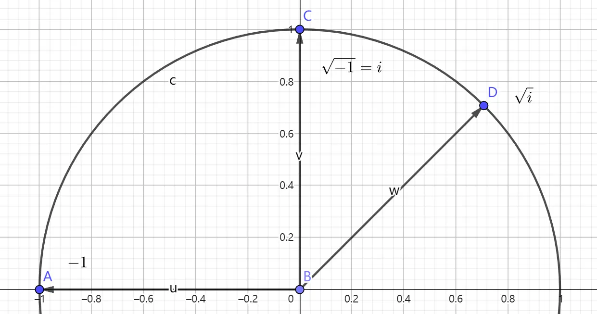

以下是推式子时间,记录一些公式的求解过程.(以及一些奇奇怪怪的公式)
1.求解的个数:(1e9取模)
首先我们发现,1/x和1/y都是小于1/n!的,所以x和y应该是大于n!的.
我们设 $y=n!+k,k\in N^+$ ,于是式子变成
化简变成
我们就统计一下约数个数就行了,具体地,线性筛一下,算出每个数的最小质因数,因为 $x^2$ 的每个约数都是 $x$ 的平方,所以我们要先乘2再加1然后把所有质数上的情况乘起来.
2.求
我们分情况考虑,假设 $3k+7$ 是质数,则由定理知 $(3k+6)!\equiv-1\mod (3k+7)$ ,所以我们设 $(3k+6)!+1=a(3k+7)$ (同时注意,模意义下只能这么干,不要想着逆元解决),原式即为
同时,假如不是质数,由于其质因子全部包含在阶乘里面,也就有了 $(3k+7)|(3k+6)!$ .这个时候还是设 $(3k+6)!=a(3k+7)$ ,式子可以化为
所以,式子只是让我们统计一下有多少个 $3k+7$ 是质数.
3.求 $x^2+y^2=19451945$ :凑配法:对于展开数有以下式子:
然后19451945就能分解为1945*10001,现在开始考虑分解1945,在3的时候能分解,问题解决了.最后的abcd分别是 $3,44,100,1$ ,答案是 $344,4397$ .
4.计算
然后设这个函数为S,直接计算即可.
其他奇奇怪怪的公式
- feb表示斐波那契数列第n项.
- n! 中p的幂次是
- 若 $b|a$ 则有
- 快速幂的优化(偏一点)
常规快速幂是快速求 $a^b\%c$ 现在是多组数据求 $x^k\%p$ ,注意x和p是给定的,如何预处理?
正解不是快速幂,而是分块思想,取 $k=\sqrt{mod}$ ,预处理 $x^0,xx^1,…,x^{k-2},x^{k-1}$ 和 $x^{0},x^{k},x^{2k},…,x^{\lfloor\frac{mod}{k}\rfloor k}$ ,然后每次查询就是O(1)级别的了,预处理是 $O(k)$ 也就是 $O(\sqrt{mod})$ 在 $5e^6$ 的数据范围下跑得过 $O(T\log k)$ . - 斐波那契数列模 $p$ 具有周期性(不只是质数),且循环节长度 $\pi(p)\le6p$ .
- 常见放缩
Wilson威尔逊定理
特殊的阶乘(n比p大,不计所有p的因子对p取模)
打一个阶乘表可以 $\log_pn$解决.
Lagenre(勒让德)公式
其中, $S_p(n)$ 表示在p进制下n每位数字和.(注意,直接除,不要用逆元)
升幂引理
规定 $v_p(n)$ 表示n中有多少个p这个因子.
- 素数p和与p互质的n.
若 $p|x-y$ 有若 则对 奇数 n有 - 若p不是2(是奇质数):
若 $p|x-y$ 有若 $p|x+y$ 则对 奇数 n有 - 若p是2且 $p|x-y$ 对 偶数 n有
- 对于 $4|x-y$
复数向量根号的几何意义
在复数坐标系上向量的根号是辐角折半,平方的意思是辐角二倍,在坐标系上转.
